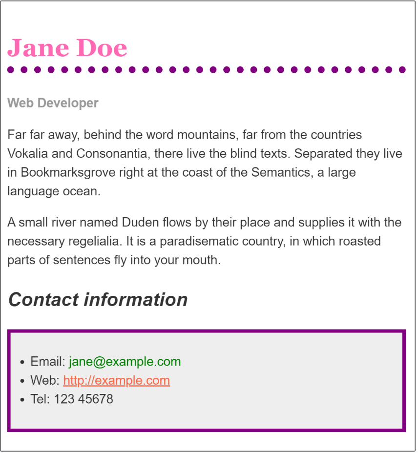

CSS 实战
本文按照 Mozilla 贡献者基于 CC-BY-SA 2.5 协议发布的以下文章改编:
- https://developer.mozilla.org/zh-CN/docs/Learn/CSS/First_steps/How_CSS_works
- https://developer.mozilla.org/zh-CN/docs/Learn/CSS/First_steps/Using_your_new_knowledge
祝贺大家！经过了前面的学习，我们终于来到了实战部分，现在你可以初步搭建一个自己的网站了！
浏览器解析 CSS
在开始之前，我们有必要了解一下浏览器是怎么解析 CSS 的。
当浏览器展示一个文件的时候，它必须兼顾文件的内容和文件的样式信息，下面我们会了解到它处理文件的标准的流程。需要知道的是，下面的步骤是浏览加载网页的简化版本，而且不同的浏览器在处理文件的时候会有不同的方式，但是下面的步骤基本都会出现。
- 浏览器载入 HTML 文件（比如从网络上获取）。
- 将HTML文件转化成一个 DOM（Document Object Model），DOM是文件在计算机内存中的表现形式。
- 接下来，浏览器会拉取该HTML相关的大部分资源，比如嵌入到页面的图片、视频和 CSS 样式。JavaScript 则会稍后进行处理，简单起见，同时此节主讲 CSS ，所以这里对如何加载 JavaScript 不会展开叙述。
- 浏览器拉取到CSS之后会进行解析，根据选择器的不同类型（比如 element、class、id 等等）把他们分到不同的“桶”中。浏览器基于它找到的不同的选择器，将不同的规则（基于选择器的规则，如元素选择器、类选择器、id选择器等）应用在对应的DOM的节点中，并添加节点依赖的样式（这个中间步骤称为渲染树）。
- 上述的规则应用于渲染树之后，渲染树会依照应该出现的结构进行布局。
- 网页展示在屏幕上（这一步被称为着色）。
上面看不太懂也没事，有个概念就可以，方便自己以后调试网站的时候更快地了解到问题。
浏览器如何对待错误的 CSS
如果浏览器在加载 CSS 的时候发现了一些错误，比方说属性拼写错误，或者选择器错误，会怎么做？
你也许猜到了：浏览器什么也不做，直接跳过去！就像这个 CSS：
1 | p { |
在第一个例子，我们使用了不规范的拼写 colour （CSS 只支持美式英语），然后浏览器会直接忽略这个规则，跳过去，于是段落就变成了放大 200% 的粗体，用的默认颜色（一般是黑色）。
第二个例子，我们使用了错误的选择器。这导致这个规则被忽略，包括大括号里面跟着的那些规则。
注意，这里不会有报错，而是直接忽略，所以你不会从控制台或者调试窗口或者什么地方得到这个属性没有被渲染的消息，只能从最后元素的样式去判断。
如果你想对某些上古浏览器进行支持（比如某毒瘤 IE6），那么这种特性会比较有用。比方说某个浏览器是没有 calc 这个函数的，它就会使用上面的 500px，而正常浏览器则会正常解析下面的 calc，并且显示出来。
1 | .box { |
实战例子
现在，我们正式开始实战。
我们强烈建议你在计算机上进行实际操作，毕竟实操和看看是有很大区别的。我们此处的例子是从 MDN 的对应章节（MDN -> 学习 Web 开发 -> CSS -> CSS 第一步 -> 运用你的新知识，https://developer.mozilla.org/zh-CN/docs/Learn/CSS/First_steps/Using_your_new_knowledge）里面摘出来的，你可以选择从那里直接复制代码，然后照着链接里面的说明进行操作。
现在你应该可以理解下面的 html 和 css，以及它们显示出来的样子。新建一个文件夹，在里面建立下面这两个文件，再在浏览器里面打开 index.html ，看看是不是显示出图片里面的样子。
index.html
1 |
|
styles.css
1 | body { |

现在你可以尝试对它进行一系列的操作，看看它会变成什么样子。比方说你可以这么做（不知道怎么做的往前翻，都讲过。这里是个练习，不提供示例代码）：
- 使用 CSS 的颜色关键词
hotpink，将一级标题设定为粉红色。 - 使用 CSS 颜色关键词
purple，为标题添加 10 像素宽的点线边距（注释里面有提到的） - 将二级标题设为斜体（
font-style: italic）。 - 用
#eeeeee为联系人列表中的超链接添加背景颜色和一个 5 像素宽的紫色加粗边框 (border)。使用一些内边距 (padding) 属性，拉开正文与外边距的距离。 - 当鼠标在某些 HTML 元素上悬停时增加动画 (推荐改变颜色和字体试试)。
- 设置链接在鼠标悬停时变为绿色。
然后就会变成这样

结束了？
“好像内容是结束了？那我是不是可以自己搭建一个网站了？”
如果说是搭建一个初步的网站，那么的确是可以了。但是有的网站好像不是那么简单，比方说导航栏，侧栏，底栏这些，要怎么办？下面我们会举出更多例子。
在更下面我们会把更加综合地讲解一下 HTML 和 CSS 的合作的例子，给大家一些网站的例子去讲解。